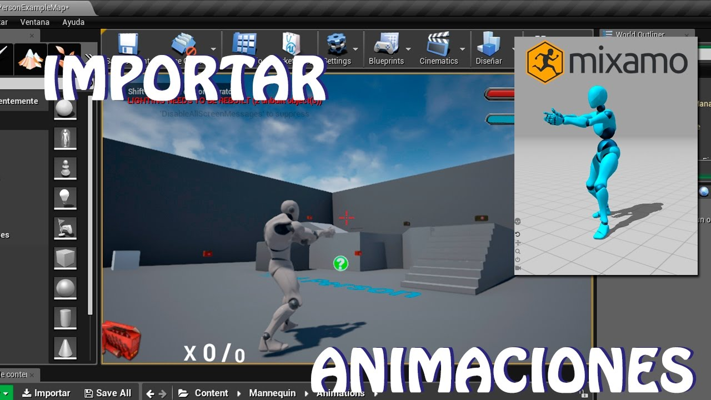

| 1 |
lidar la tecnologia de las nubes de los puntos |
Añade y usa conjuntos enormes de datos del mundo real con la posibilidad de importar, visualizar, editar e interactuar con nubes de puntos sacadas directamente de dispositivos de escaneo láser dentro de Unreal Engine. |
|
2 |
herramientas para el paisaje y terreno |
Crea entornos y terrenos de mundo abierto a gran escala con montañas, valles e incluso cuevas gracias al sistema de paisajes. |
|
3 |
blueprints de animacion |
Crea y controla comportamientos de animación complejos con los blueprints de animación. |
 |
4 |
iluminacion sotisficada |
Crea efectos realistas de iluminación de interiores y exteriores sin comprometer el rendimiento en tiempo real con una amplia gama de herramientas de iluminación avanzadas |
 |
5 |
sistema de destruccion y fisica caos |
es el sistema de físicas de alto rendimiento de última generación de Unreal Engine. Con la función de destrucción de Chaos, puedes fracturar, fragmentar y destruir escenas a gran escala con calidad |
|
6 |
El sonido con unreal engine |
Mejora el sonido de tu proyecto con un rico conjunto de funciones de sonido, |
 |
7 |
sisetema de camara virtual |
Los directores de fotografía que trabajen en un entorno de producción virtual pueden manejar las cámaras en Unreal Engine |
 |
8 |
proyectos de muestra |
Explora, adapta y aprende con más de 20 proyectos de muestra que vienen incluidos en Unreal Engine. |
|
9 |
diseño y rendimiento |
cuenta con una gran cantidad de herramientas que te ayudarán a diseñar, analizar y optimizar tu proyecto para conseguir tener un rendimiento en tiempo real |
|
10 |
desarrollo de multiforma |
puedes llevar contenido a una amplia gama de plataformas de escritorio, consolas y móviles, como Windows, macOS y Linux; PlayStation 4, PlayStation 5, Xbox One, Xbox Series X y Nintendo Switch; y los dispositivos móviles iOS y Android. |
|